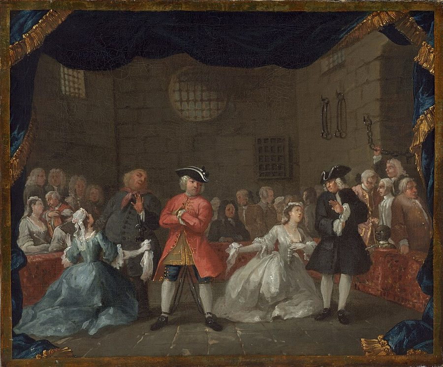
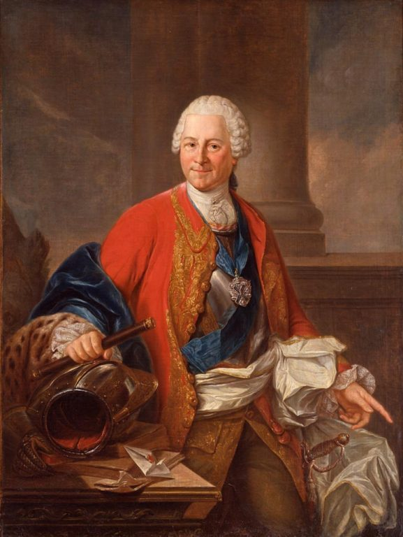

这一页在做什么
卷二讲资本，这一章问：资本是怎么多起来的，一国怎样一年比一年富？斯密从一条有名的线讲起：有的劳动留下能卖的东西，有的劳动做完就没了，君主、医生和歌剧演员都在后一类。然后讲节俭：他把节俭的人叫作公众的恩人，把国王叫作最大的败家子。读的时候抓两条线：这条线今天还站不站得住；「多省钱就多资本」在什么时候成立。

他想证明什么
前两页讲了资本是什么、钱和银行怎么回事。这一章问：资本是怎么多起来的？斯密先划一条线：有的劳动把价值「存」进一件能卖的东西里，有的劳动做完就没了。一国一年的产物，拿去养前一种人的份额越大，明年的产物就越多。由此推下去：资本靠节俭增加，靠挥霍和失策减少；省下的钱并没有闲着，只是换了一批人去吃穿用。接着他放心地说，大多数人生来想改善境况，节俭压得住挥霍，所以私人的浪费拖不垮大国，政府的浪费有时能；英国一百多年战乱不断还是富了，靠的就是私人默默地攒。最后比两种花钱法：花在房子、家具、书上，比大宴宾客、养一群仆人更有利于国家富裕。
读法：§1 和 §4 先读，杨译三千来字。§2 是年产物怎样分成资本和收入的老账，可以跳过，只看第 12 段的凡尔赛和格拉斯哥。§3 是节俭那几段的正文，有空就读；§5、§6 故事多。
第 1–2 段把医生、文人、演员的劳动都算作「非生产性」。这条线今天已经过时，服务是富国经济的大头。斯密也没看不起这些职业，见「今天怎么看」。
斯密落在哪：资本只能靠节俭一点点攒起来，节俭的人是公众的恩人，挥霍的人是公众的敌人；人生来想改善境况，所以私人的节俭常常抵得过政府的浪费，国王和大臣才是社会上最大的败家子。
分节地图
这一页是卷二第 3 章，本站切成 6 节。粗体是本站起的节名；「杨译里找」后面是杨译里这一节开头附近的小标题或第一句；灰色的英文是原文这一节开头的几个词。标「先读」的是最短读法。
- 君主和歌剧演员都不生产有两种劳动：生产性的和非生产性的THERE is one sort of labour which …斯密划线：活干完，有没有留下一件能卖、能放一阵的东西。第 2 段把君主、军队、医生、演员、歌剧舞蹈家放进同一类，留意他一再说这些劳动「有价值」。
- 资本养勤劳，收入养懒惰一部分产品替代资本，一部分构成利润和地租Though the whole annual produce of the …年产物怎样分成补偿资本和利润地租的老账，今天已不用这套框架，可以跳过。只看第 12 段：靠宫廷养活的城市懒，靠资本养活的城市勤。
- 节俭者是公众的恩人资本因节俭或储蓄而增加Capitals are increased by parsimony, and diminished …节俭和挥霍的正文：省下的钱换一批人去吃穿，挥霍的人像挪用了祖先捐的善款。第 18 段是后来最受质疑的一环，第 23–25 段顺手回敬重商主义者。
- 从娘胎带来的改善愿望行为不当的效果，常常也和浪费…The effects of misconduct are often the …全章最好的几段：改善境况的愿望从娘胎跟到坟墓，破产的人大概不过千分之一，私人的努力抵得过「医生的荒谬处方」。留意 seldom、never、sometimes 的分寸。
- 国王才是最大的败家子为了增加一国的产物必须增加资本The annual produce of the land and …英国从复辟到 1776 年战乱和浪费不断，还是变富了；几乎每五年就有人写书宣布国家在衰落。第 36 段末尾骂国王是最大的败家子，全书名句。
- 国王的婚床进了酒馆除了资本的增加或减少以外，可以区分各种不同的支出As frugality increases, and prodigality diminishes the …两种花钱法：大宴宾客、养一群仆人，还是买房子、家具、书。故事多：365 套衣服、进了酒馆的王室婚床。第 42 段斯密自己说，爱买小玩意的人常常更自私。
先用中文过一遍：这一页的概念
这一页用到的两个概念。讲的是概念本身；每块的「今天」说今天怎么看它。
§1生产性与非生产性劳动 productive and unproductive labour
斯密给劳动分类，标准只有一条：活干完以后，有没有留下一件能卖、能放一阵子的东西。织布工把自己的工钱和老板的利润都「存」进了布里，布卖出去，换来的钱又能雇下一批人，这是生产性劳动；家仆端茶扫地，活一干完就没了，这是非生产性劳动。他把君主、法官、军队、牧师、律师、医生、文人、演员、歌剧舞蹈家都放进后一类，同时说得清清楚楚：这些劳动也有价值，也该拿报酬，有的还很体面、很有用、很必要。他分的不是有用没用，而是能不能变成下一年的资本。别和今天说的「生产率」混在一起：生产率说的是一小时干出多少，和这条线无关。
今天：经济学早已不用这条线。国民账户把市场上卖的服务都算产出，政府服务按成本算进去。苏联东欧的统计沿用类似的划分，到 1990 年前后才换掉。
在这一页：第 1–3 段立线，第 30 段拿它算政府的账，第 41 段拿它比较两种花钱法。
§3节俭和积累 parsimony; the accumulation of capital
一年的收入，花掉一部分，省下一部分。斯密说，省下的那部分，要么自己拿去雇人干活，要么借给别人去雇，换一份利息。一个人的资本只能这样攒，一国的资本也一样，所以资本增加，直接的原因是节俭，不是勤劳：勤劳挣来的东西，不省下来，资本不会多一分。今天把这件事拆成两半：储蓄是收入里没花掉的部分，投资是拿钱去买机器、盖厂房、雇人做事。斯密几乎把两半当成一回事：第 18 段说，省下的钱「为了利润」会立即被用作资本，所以省下的和花掉的一样被吃掉、穿掉，只是换了一批人，花掉的养了宾客和家仆，省下的养了工人。这里的 parsimony 是褒义的节俭，不是吝啬。
今天：长期看，投资要靠储蓄撑着；短期看，储蓄不一定马上变成投资，人人都捂紧钱包时，生意反而更差，这叫「节俭悖论」。见「今天怎么看」。
在这一页：第 14–19 段讲节俭，第 20 段讲挥霍，第 25 段下结论。雇人的那笔钱，页 05 叫工资基金。
故事和背景
这一页里的故事和 18 世纪的东西，按在书里出现的顺序排。
§2凡尔赛和格拉斯哥
第 12 段是「可跳过」那一节里最好看的一段。斯密说，靠资本养活的商业城市，下层百姓大多勤劳、清醒、日子兴旺，英格兰和荷兰的许多城市就是；靠宫廷花钱养活的城市，百姓大多懒散、放荡、贫穷，罗马、凡尔赛、贡比涅、枫丹白露就是。他还引了一句俗话：白玩也比白干强。最有地方色彩的是两座苏格兰城市：爱丁堡在 1707 年合并以前没什么贸易，议会搬走、大贵族不再非住那里不可以后，倒有了些生意，但还远不如格拉斯哥，那里的人主要靠资本养活。斯密在格拉斯哥大学教了十几年书，这是他熟悉的对比。Cannan 注里说，斯密早年讲课时把爱丁堡的懒散只归因于居民缺少独立，「资本和收入」这套说法，是他后来研究重农学派的收获。
§5每五年一本「国家在衰落」
第 33 段：从 1660 年查理二世复辟到斯密写书，一百多年里几乎每五年就有一本书或小册子，写得颇有分量，论证国家财富在迅速减少、人口在流失、农业荒废、制造业衰败、贸易完蛋。斯密特意说，这些书不全是党派的造谣文字，许多出自真诚、聪明的人。第 35 段再列一张灾难清单：伦敦大火和大瘟疫，两次对荷兰的战争，光荣革命的动乱，爱尔兰的战争，1688、1702、1742、1756 年开始的四次对法战争，1715 和 1745 年的两次叛乱。光四次对法战争，国家就欠下 1.45 亿镑以上的债，加上别的额外开支，总共不下 2 亿镑。他的结论是：这些事拖慢了英国，却没能让它停下来，因为私人在不声不响地攒资本。
§6365 套衣服和一张王室婚床
第 38 段，斯密说最无聊的花钱法，是像「一位几年前去世的大君主的宠臣兼大臣」那样攒一大柜华服。他没点名。Cannan 引法国译者 Garnier 的注，说这是波兰国王兼萨克森选帝侯的首相布吕尔伯爵，死后留下 365 套衣服，件件华贵。布吕尔死于 1763 年（Cannan 注里写作 1764 年）。反过来，花在耐用品上的钱，日后会流到普通人手里：西摩家族的旧宅成了巴斯大路上的一家客栈，Cannan 补充说它后来又在 1843 年变成了马尔伯勒公学。詹姆斯一世 1589 年娶的丹麦王后带来一张婚床，「适合君主送君主」，几年前成了邓弗姆林一家酒馆的摆设。Cannan 说，那位女店主是死忠的詹姆斯党人，有人出 50 几尼她都不卖，约 1764 年送给了埃尔金伯爵；到 Cannan 编书时，床的残件已改成附近一座宅子饭厅里的壁炉架。

原典：斯密的原话
这本书是公版书，下面整段放斯密的原文，配本站的白话译。灰字说它在杨译的哪里，最后一行是这段里今天容易读错的 18 世纪词。
§1君主和歌剧舞蹈家同属一类
全章最常被引、也最能说明这条线为什么过时的一段，取第 2 段的大半。在杨译这一章开头，有两种劳动：生产性的和非生产性的下面第二段。
The sovereign, for example, with all the officers both of justice and war who serve under him, the whole army and navy, are unproductive labourers. They are the servants of the public, and are maintained by a part of the annual produce of the industry of other people. Their service, how honourable, how useful, or how necessary soever, produces nothing for which an equal quantity of service can afterwards be procured. The protection, security, and defence of the commonwealth, the effect of their labour this year, will not purchase its protection, security, and defence for the year to come. In the same class must be ranked, some both of the gravest and most important, and some of the most frivolous professions: churchmen, lawyers, physicians, men of letters of all kinds; players, buffoons, musicians, opera-singers, opera-dancers, &c. The labour of the meanest of these has a certain value, regulated by the very same principles which regulate that of every other sort of labour; and that of the noblest and most useful, produces nothing which could afterwards purchase or procure an equal quantity of labour. Like the declamation of the actor, the harangue of the orator, or the tune of the musician, the work of all of them perishes in the very instant of its production.
本站译：比如说，君主，连同在他手下效力的全部司法官员和军官，整个陆军和海军，都是非生产性劳动者。他们是公众的仆人，靠别人劳动的年产物的一部分养活。他们的服务，不管多么体面、多么有用、多么必要，都没有生产出什么东西，可以在日后换来同样多的服务。他们今年劳动的效果，是国家得到保护、安全和防卫，可这份效果买不来明年的保护、安全和防卫。同一类里还得算上一些最庄重、最要紧的职业，也有一些最轻佻的职业：牧师、律师、医生、各种文人；演员、小丑、乐师、歌剧演员、歌剧舞蹈家，等等。这些人里地位最低的，劳动也有一定的价值，由支配其他一切劳动的同一套原则来定；地位最高、最有用的，劳动也生产不出什么东西，能在日后买到或换来同样多的劳动。就像演员的念白、演说家的雄辩、乐师的曲子，他们所有人的工作都在产生的那一刻就消失了。
斯密一再给这些职业留体面：「多么体面、多么有用、多么必要」，「也有一定的价值」。他不是看不起演员和医生，问的是这份劳动能不能存下来、变成明年的资本。斯密自己是文人和教授，也在这张名单上。
- churchmen神职人员，牧师
- men of letters文人，读书写作的人
- buffoons小丑、滑稽演员
- declamation舞台上的念白、朗诵
- harangue慷慨激昂的长篇演说
§4从娘胎带到坟墓
斯密写人性最好的几句之一，取第 28 段，略去开头四个词和中间半句。在杨译浪费比改善自己的状况更为短促下面那一段。
the principle which prompts to expence, is the passion for present enjoyment; which, though sometimes violent and very difficult to be restrained, is in general only momentary and occasional. But the principle which prompts to save, is the desire of bettering our condition, a desire which, though generally calm and dispassionate, comes with us from the womb, and never leaves us till we go into the grave. In the whole interval which separates those two moments, there is scarce perhaps a single instant in which any man is so perfectly and completely satisfied with his situation, as to be without any wish of alteration or improvement of any kind. An augmentation of fortune is the means by which the greater part of men propose and wish to better their condition. It is the means the most vulgar and the most obvious; and the most likely way of augmenting their fortune, is to save and accumulate some part of what they acquire … Though the principle of expence, therefore, prevails in almost all men upon some occasions, and in some men upon almost all occasions, yet in the greater part of men, taking the whole course of their life at an average, the principle of frugality seems not only to predominate, but to predominate very greatly.
本站译：……促使人花钱的，是贪图眼前享受的激情。这种激情有时很猛烈，很难按住，但一般只是一时的、偶尔的。促使人存钱的，则是改善自身境况的愿望。这种愿望一般平静、不动声色，却从我们出娘胎就跟着来，直到进坟墓才离开。在这两个时刻之间的整整一生里，大概很难找到哪一刻，有谁对自己的处境满意到一点也不想改变、不想改进。大多数人打算、也盼望靠增加财产来改善境况。这是最寻常、最显而易见的办法；而增加财产最可能走通的路，就是把挣到的东西省下一部分，攒起来……所以，花钱的冲动几乎在每个人身上都有占上风的时候，在有些人身上几乎时时占上风；可是在大多数人身上，把一生平均起来看，节俭的倾向看来不只占上风，而且占很大的上风。
留意分寸：scarce perhaps（大概很难）、in general、seems；他说的是「大多数人」「一生平均」，没说人人都节俭。这句话和页 01 的交换倾向、页 17 的看不见的手常放在一起读。今天的行为经济学对它有补充，见「今天怎么看」。
- profusion挥霍、大手大脚（这一段的开头）
- dispassionate不带激情的，平静的
- vulgar普通的、最常见的，不是「粗俗」
- frugality节俭
§5国王才是最大的败家子
全书名句，取第 36 段的后半。在杨译私人的节俭和审慎不声不响地抵消了这些情况那个小标题前面的一大段末尾。
It is this effort, protected by law and allowed by liberty to exert itself in the manner that is most advantageous, which has maintained the progress of England towards opulence and improvement in almost all former times, and which, it is to be hoped, will do so in all future times. England, however, as it has never been blessed with a very parsimonious government, so parsimony has at no time been the characteristical virtue of its inhabitants. It is the highest impertinence and presumption, therefore, in kings and ministers, to pretend to watch over the œconomy of private people, and to restrain their expence, either by sumptuary laws, or by prohibiting the importation of foreign luxuries. They are themselves always, and without any exception, the greatest spendthrifts in the society. Let them look well after their own expence, and they may safely trust private people with theirs. If their own extravagance does not ruin the state, that of their subjects never will.
本站译：正是这种努力，受法律保护，又有自由让它按最有利的方式施展，在过去几乎所有时代维持了英格兰走向富裕和改良的进程；但愿将来的一切时代也是这样。不过，英格兰从来没有过一个很节俭的政府，节俭也就从来不是它的居民的特有美德。所以，国王和大臣们自命要去照管私人的家计，用禁奢法或者禁止外国奢侈品进口来限制私人花钱，是最大的僭越和狂妄。他们自己永远是、毫无例外地是社会上最大的败家子。让他们管好自己的开支吧，私人的开支尽可以放心交给私人。他们自己的铺张要是毁不了国家，臣民的铺张也绝不会。
这几句常被引来证明「斯密反政府」。上下文说的是：国王不该用禁奢法和进口禁令管私人怎么花钱。同一段开头，他把私人努力的成功归于「受法律保护、有自由施展」；卷五他又用一整卷讲政府该花钱办的事。
- impertinence多管闲事、越分
- œconomy家计，一家人的开支安排
- sumptuary laws禁奢法，限制穿戴、饮食等奢侈花费的法律
- spendthrifts败家子，乱花钱的人
译本勘误
杨译这一章整体可靠。下面只收会把人读歪的一处。灰字是英文原文那一处的几个词；方框里是杨译的原句，在电子书里搜它。
§4政府的浪费「有时」拖垮大国，不是「常常」误译
though they sometimes are by public
译本：「它们常常因公共的浪费和行为不当而变穷」
原文是 sometimes（有时）。斯密的意思是：私人的浪费从来拖不垮大国，政府的浪费偶尔能；紧接着第 31 段又说，私人的节俭在大多数场合连政府的浪费也补得回来。译成「常常」，斯密对政府就显得比原文悲观得多，前后两段也对不上。
今天怎么看
这一章的主要说法和今天的判断。每条标签判的是那条论点，五种标签的意思：
- 成立今天的经济学和证据支持这句话。
- 部分成立大方向对，细节或适用范围要改。
- 过时说的是 18 世纪的世界，当时也许对，今天的制度和技术已经变了。
- 被推翻后来的经济学或证据说明它错了。
- 有争议经济学界至今没有定论，两边各有代表性的研究。
只有留下能卖、能留存的东西的劳动才是生产性的，家仆、官员、演员的服务做完就消失
斯密用这条线判断谁的劳动能变成下一年的资本，同时承认非生产性劳动有价值、该拿报酬。今天看，这条线过时了：1776 年市场上卖的多半是有形的东西，服务多半是富人家的仆役；今天服务是经济的大头，录下来的演出、写出来的软件也能用很多年，见下面的卡。
§1 第 1–3 段资本增加，直接原因是节俭；省下的钱会立即被用作资本，雇来生产性劳动者
今天看，长期那一半站得住：没有储蓄撑着，机器厂房添不起来，各国的数据里储蓄率高的国家，人均收入的水平也高。「立即」那一环要打折扣：省下的钱可能躺着不动，萧条时人人多存钱，需求反而少了，见下面的看法。
§3 第 14–18 段大多数人把一生平均起来，节俭的倾向大大压过花钱的冲动
斯密用了 seems 和「大多数人」。今天看，一国总体上年年有储蓄，大方向不错；可行为经济学发现，人很容易把存钱往后拖。美国一家大公司把退休储蓄计划改成新员工默认加入后，新员工的参加率高了约 48 个百分点（Madrian 和 Shea，2001）：同样的人，只换了个默认选项。
§4 第 28 段大国从不因私人的浪费变穷，有时因政府的浪费变穷；私人的节俭在大多数场合抵得过政府的浪费
英国一百多年战乱不断还是变富了，是他的证据。今天看，私人积累是增长的发动机，这一点没人反对；可「政府的钱几乎都拿去养不生产的人」过时了，修路、办学、资助科研，今天都算投资。斯密自己在卷五也主张政府办公共工程和基础教育。
§4 §5 第 30–36 段书里的说法：家仆、官员、医生、演员的服务做完就消失，不增加一国的年产物
- 书里
- 第 1–3 段。第 3 段说，除了土地自己长出来的东西，全部年产物都出自生产性劳动。
- 当时
- 1776 年的英国，大多数人种地或做手工，市场上买卖的多半是有形的东西；斯密说「服务」，头一个想到的是富人家里的仆役。
- 今天
- 服务是经济的大头。按世界银行的数据，2021 年高收入国家约 69% 的增加值来自服务业，2023 年约 74% 的就业在服务业，英国是 83%。连斯密说「一产生就消失」的东西也能存下来：美国经济分析局 2013 年起把研发和电影、音乐、书稿这类「娱乐、文学和艺术原件」算作投资，理由正是它们能复制很多份、用上一年以上。一场演出录成母带，在美国的账上就是一笔资本。核对于 2026-10。依据：世界银行《世界发展指标》NV.SRV.TOTL.ZS、SL.SRV.EMPL.ZS；美国经济分析局 2013 年 6 月和 7 月的修订说明。
- 另一边
- 这条线没有马上消失。苏联东欧用「物质产品平衡表」算国民经济，医疗、教育、住房、生活服务都不算进净物质产品，到 1990 年前后才改用今天的国民账户。
人人都节俭，是好事吗
主流看法：凯恩斯 1936 年在《通论》里说，人人都想少花多存时，彼此的收入跟着下降，想多存的那份最后存不下来；他还替曼德维尔 1714 年的《蜜蜂的寓言》说了好话，那本书说私人的奢侈养活了大众。「节俭悖论」这个名字是 Samuelson 1948 年的教科书叫开的。讲长期增长的一派则说，储蓄是投资的来源：Mankiw、Romer、Weil 1992 年的跨国研究发现，储蓄率高的国家人均收入水平也高。
斯密的看法：第 18 段说，省下的钱「为了利润」会立即被用作资本；第 25 段说，挥霍者是公众的敌人，节俭者是公众的恩人。Cannan 在注里就挑过第 18 段：那是把工人的工钱和他们造出来的东西混为一谈，真正省下的是新添的资本，它并没有被吃掉。
本站的评论：两边看的不是同一段时间。斯密算的是几十年、上百年的账：英国从复辟到他写书，靠私人一点点攒资本才变富，这在今天的增长理论里仍然成立。凯恩斯盯的是萧条那几年：钱省下来，要有人愿意借去投资才变成资本；人人都怕前景时，这一环就断了。所以别把斯密读成「越省越好」，他自己写的是「为了利润」才会投出去；也别把凯恩斯读成「越花越好」，他讲的是需求不足的时候。
本站的总体看法：先读 §1 和 §4。生产性劳动那条线当思想史读，它说的是斯密心里「什么能攒下来」，不是哪种工作高贵；节俭那几段要留住分寸：长期对，萧条时不一定。最值得带走的是第 28 段那几句人性观和第 36 段对国王的挖苦。
精彩回顾
隔几周回来时看这里。想不起来，点节号回到那一节。
一句话：资本靠节俭攒出来；「生产性劳动」那条线过时了，「省下的钱立即变成资本」要打折扣。
斯密把君主、军队、医生、演员都算作非生产性劳动者，也说他们的劳动有价值。今天富国约七成的产出来自服务业。
§1改善境况的愿望从出生跟到入土；把一生平均起来，大多数人身上节俭占上风。行为经济学补了一句：存钱很容易往后拖。
§4国王和大臣自己才是社会上最大的败家子：管好自己的开支，私人的开支可以放心交给私人。
§5詹姆斯一世的王后从丹麦带来的婚床，成了邓弗姆林一家酒馆的摆设。富人的耐用品，迟早流到普通人手里。
§6